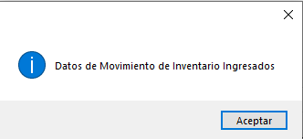
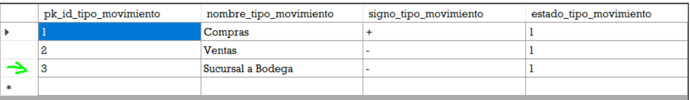

Vista de Formulario
El formulario se visualiza de forma que este dentro del MDI del programa, en la parte inferior de la ventana se puede visualizar la fecha y hora actual en la que transcurre
el acceso al mismo formulario.
Mantenimientos Previos
Antedes de ingresar una gestion de este tipo se debe de ingresar datos a los mantenimientos de:
* Documentos de Compra (se debe de gestionar la recepción de productos en el proceso de compras).
* Ventas.
* Pedidos.
* Rutas.
* Vehiculos.
* Tipo de Movimientos.
Realizar Movimiento de Inventario
Para poder gestionar cualquier movimiento al ivnentario debera seleccionar el tipo de movimiento .

Ingreso de Datos
A continuación, le mostramos un ejemplo de cómo debe ingresar datos al sistema a través de este formulario.
Este es el mensaje que debe ver en pantalla para confirmar el ingreso de datos.
Visualización de Datos es el Grid
Los datos ingresado se muestran en el grid, a si como los que ya están en el sistema.
